Disentangling Speaker Traits for Deepfake Source Verification
via Chebyshev Polynomial and Riemannian Metric Learning
Xi Xuan1,2 Wenxin Zhang3 Zhiyu Li4
Jennifer Williams5 Ville Hautamäki1 Tomi Kinnunen1
1University of Eastern Finland
2City University of Hong Kong
3University of Chinese Academy of Sciences 4University of Science and Technology of China
5University of Southampton
Distinct, compact clusters per TTS system confirm effective source separation.
§ 4
Evaluation Protocols
Four protocols × two axes: source visibility (seen/unseen) and speaker condition (same/different). 27,530 utterances each, 1:1 balanced. EER/AUC from ResNet34 + RiemanSD-AAM (Table 2).
P-I
Seen Source — Same Speaker
0.68%EER
0.998AUC
Sample pair
tacotron2-DDC_ph
Same speaker
tacotron2-DDC_ph
Same speaker
P-II
Seen Source — Different Speaker
1.21%EER
0.996AUC
Sample pair
VITS-neon
Speaker A
VITS-neon
Speaker B
P-III · Hard
Unseen Source — Same Speaker
4.08%EER
0.988AUC
Hard pair — diff source, same voice
overflow
Same speaker
VITS
Same speaker
P-IV · Hard
Unseen Source — Different Speaker
7.13%EER
0.972AUC
Hard pair — same source, diff voices
parler_tts_mini_v1
Speaker A
parler_tts_mini_v1
Speaker B
§ 5
Source Generator Audio Samples
12 representative TTS systems from the MLAAD v8 benchmark, grouped by architectural family.
suno/bark
Foundation ~900M
Auto-regressive codec LM · multilingual
Waveform
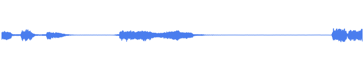
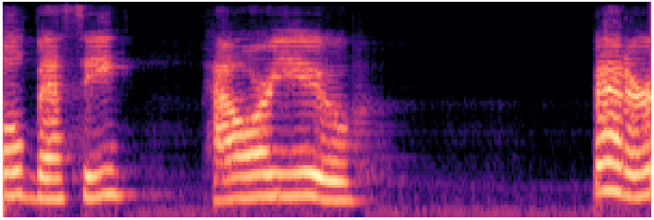
xtts_v2
Foundation ~500M
Zero-shot voice cloning · 17 languages
Waveform
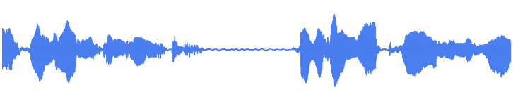
Mel spectrogram
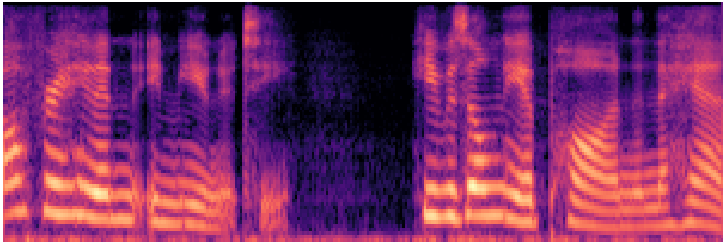
parler_tts_mini_v1
Foundation ~120M
Description-guided · controllable style
Waveform
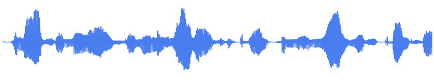
Mel spectrogram
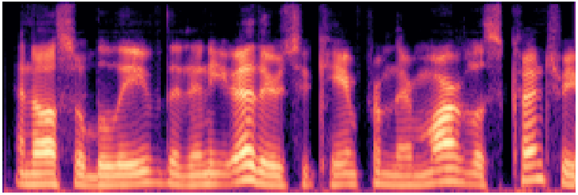
Metavoice-1B
Foundation 1B
High-fidelity · fine-tunable voice cloning
Waveform
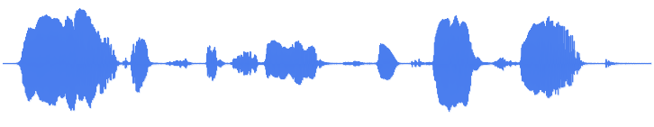
Mel spectrogram
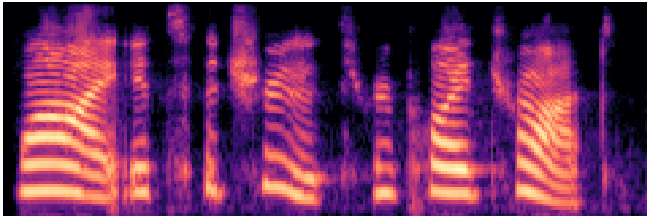
WhisperSpeech
Foundation ~350M
Open-source · Whisper encoder backbone
Waveform
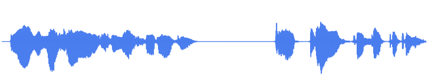
Mel spectrogram
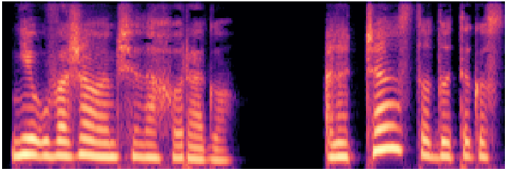
vits--neon (en/ljspeech)
VITS ~28M
End-to-end flow + GAN · English LJSpeech
Waveform
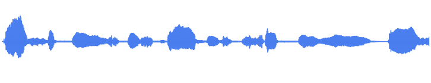
Mel spectrogram
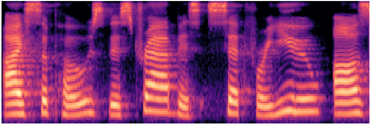
MeloTTS
VITS-derived ~30M
Multi-accent · multilingual · fast inference
Waveform
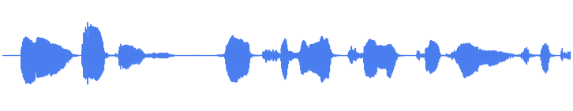
Mel spectrogram
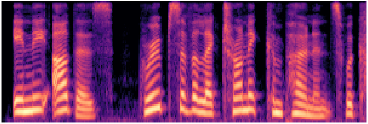
vixTTS
VITS variant ~30M
Expressive VITS-based synthesis
Waveform
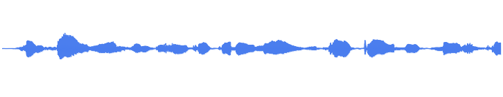
Mel spectrogram
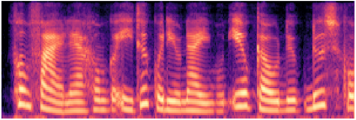
tacotron2-DDC (en/ljspeech)
Tacotron2 ~28M
Seq2seq attention + HiFi-GAN vocoder
Waveform
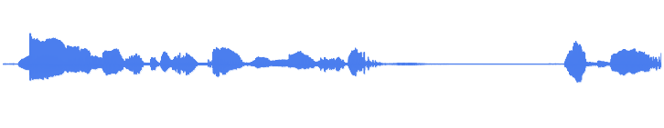
Mel spectrogram
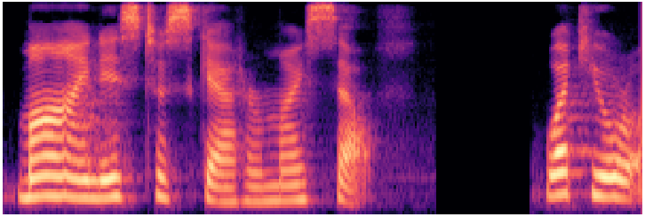
fast_pitch (en/ljspeech)
FastPitch ~45M
Non-autoregressive · explicit pitch control
Waveform
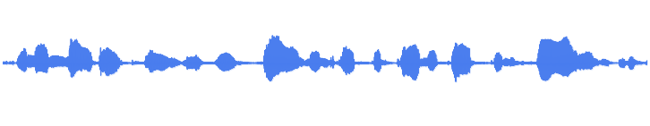
Mel spectrogram
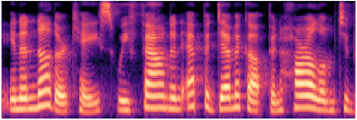
griffin_lim
Traditional vocoder
Phase reconstruction from mel · no neural vocoder
Waveform
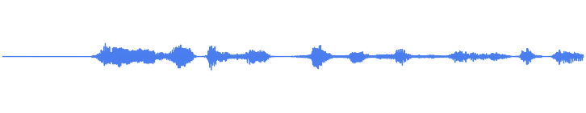
Mel spectrogram
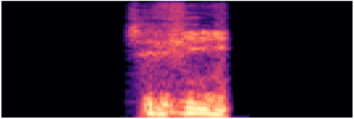
facebook/mms-tts-eng
Meta MMS ~100M
Massively multilingual · 1,000+ languages · VITS-based
Waveform
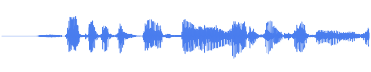
Mel spectrogram
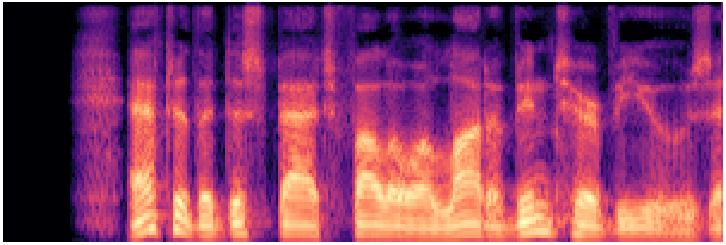
§ 6
Citation
@inproceedings{xuan2026sdml,title = {Disentangling Speaker Traits for Deepfake Source Verification
via Chebyshev Polynomial and Riemannian Metric Learning},
author = {Xuan, Xi and Zhang, Wenxin and Li, Zhiyu and
Williams, Jennifer and Hautam{\"a}ki, Ville and Kinnunen, Tomi},
year = {2026},
url = {https://github.com/xxuan-acoustics/RiemannSD-Net},
}